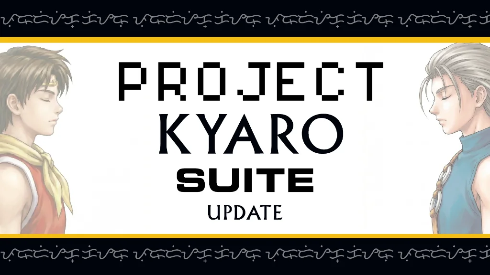

Active Flagship
Suikoden Series
Texture Suite
Project Kyaro Suite
A comprehensive texture and visual enhancement suite for Suikoden I&II HD Remaster. Sharpened portraits, high-detail UI elements, and quality-of-life adjustments crafted specifically to enhance the modern remaster experience.
- Project Update (Nov 21, 2026): Realignment called off — sticking with Project Kyaro as a unified suite. Read Full Post →
- Faithful high-definition portrait overlays and character alignments.
- Read the history behind the original PSX texture mod on the dedicated Project Kyaro Hub.